SUPPLY CHAIN FOOTPRINT
Twelve verified producers.
One desk in front of them.
Verified phosphorus-chemical partners across China — national-scale producers of wet-process acid, phosphate fertilizers and fine phosphorus chemicals. Each is rated for scale, listing status and sulphur-resilience strategy. Producers are anonymised here; identity is disclosed under NDA.
Verified partners12
National-scale producers8
Listed / SOE groups9
Product categories covered9
How to read this page. Letters are desk codes, not company names. Capacity and
reserve figures are the producers' own published public disclosures. We publish them because scale is the
only credential that survives a factory visit. Counterparty identity, current allocation and pricing are
disclosed only under an NDA framework, after the enquiry is qualified.
 A
ACentral China · SOE · Listed
Dominant wet-process phosphoric acid producer
High-concentration phosphate fertilizers, DAP and fine phosphate products at industrial scale. Its gypsum-to-acid closed loop makes it highly resilient to sulphur price swings.
P-fertilizer capacity30% of China
Rock reserves400M+ MTRouteClosed loop
 B
BCentral China · Listed
Largest phosphate fertilizer producer in China
Full nitrogen-phosphate compound portfolio. Enjoys low-cost sulphur supply arrangements that keep raw material cost far below spot market levels.
Total fertilizer10M MT
P-fertilizer /yr5.5M MTSulphur /yr2M+ MT
 C
CCentral China · Private · Listed
Top-3 compound fertilizer producer
Runs a large sulphur-burning acid base plus a substantial pyrite-based acid line for price resilience. One quarter of sulphur demand covered by below-market supply.
Acid capacity4M MT
MAP /yr1.85M MTBases11
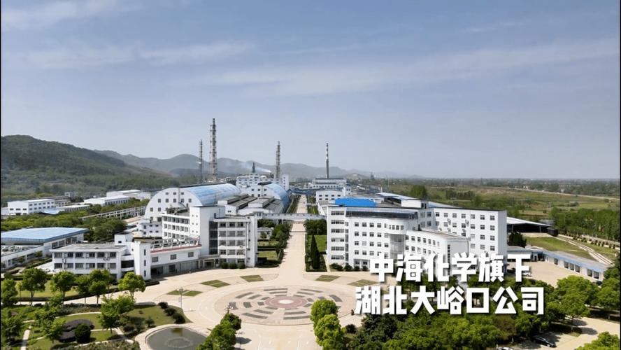
DCentral China · Listed · Growth
Listed phosphorus chemicals leader
Strong vertical integration — yellow phosphorus, glyphosate, electronic-grade acid and fertilizer lines. Operates a large gypsum-to-acid programme substituting sulphur.
Acid capacity2M MT
Sulphur-burning unitAsia #1GlyphosateChina #1
Central China · Private · Growth
Fastest-growing fertilizer group
Doubling capacity under a five-year expansion plan. Compound fertilizers, MAP and nitro-based specialty lines at multi-million-tonne scale. IPO filing in progress.
Fertilizer (2026)8.5M MT
Compound fert.Top-4Bases11
Central China · Private
Regional phosphorus-chemical heavyweight
Large acid and fertilizer complexes with long-term sulphur offtake agreements, with ongoing by-product recovery projects to lower external sulphur dependence.
Acid /yr2.7M MT
Sulphur /yr0.9M MTShare of China sulphur≈4–5%
Central China · Private · Resources
National No.1 in monoammonium phosphate
Broad DAP, compound and industrial phosphate portfolio. Backed by very large rock reserves and its own deep-water jetty on the Yangtze.
P-fertilizer4M+ MT
MAPChina #1Rock reserves190M+ MT
Central China · SOE · Listed
Listed phosphate-ammonium producer, provincial SOE group
Building a new integrated park covering ore processing, sulphur-burning acid, phosphoric acid and refined phosphates.
Sulphur /yr1.2M MT
New complex¥5.2bnListingSZSE
Southwest China · Listed · New Energy
Listed dual-route acid producer
Sulphur and pyrite acid, extending into new energy materials — iron phosphate and ultra-pure yellow phosphorus — with a new integrated base under construction.
Acid1.7M MT + 0.5M pyrite
Rock reserves130M+ MTNew baseUnder build
Central China · SOE · Resources
Provincial SOE built on large mineral resources
Covers phosphate fertilizer, iron ore and amino-acid lines. Its self-supplied acid keeps external sulphur demand low.
P-rock reserves81M+ MT
Pyrite reserves85M+ MTRegistered capital¥1.2bn
Central China · SOE base
Phosphate fertilizer base under national energy group
Runs sulphur-burning acid as its main route — a significant, reliable sulphur buyer with dedicated DAP lines.
DAP /yr0.48M MT
Acid0.8M (1M new)Employees1,000+
Central China · Private · Growth
Fully integrated private phosphate group
Mine → beneficiation → acid → phosphate → MAP, entirely in-house. Top-10 nationally in MAP/DAP sales with its own large rock mine. IPO in progress.
MAP capacity0.2M MT
Rock reserves72M+ MTUtilisation100%
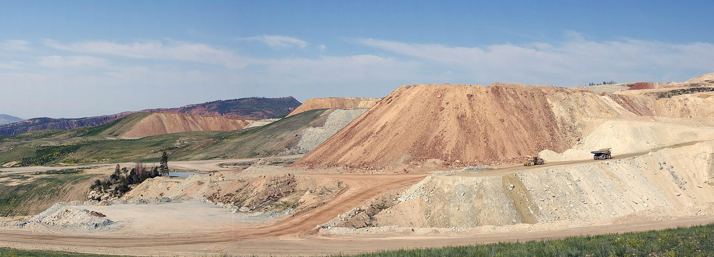
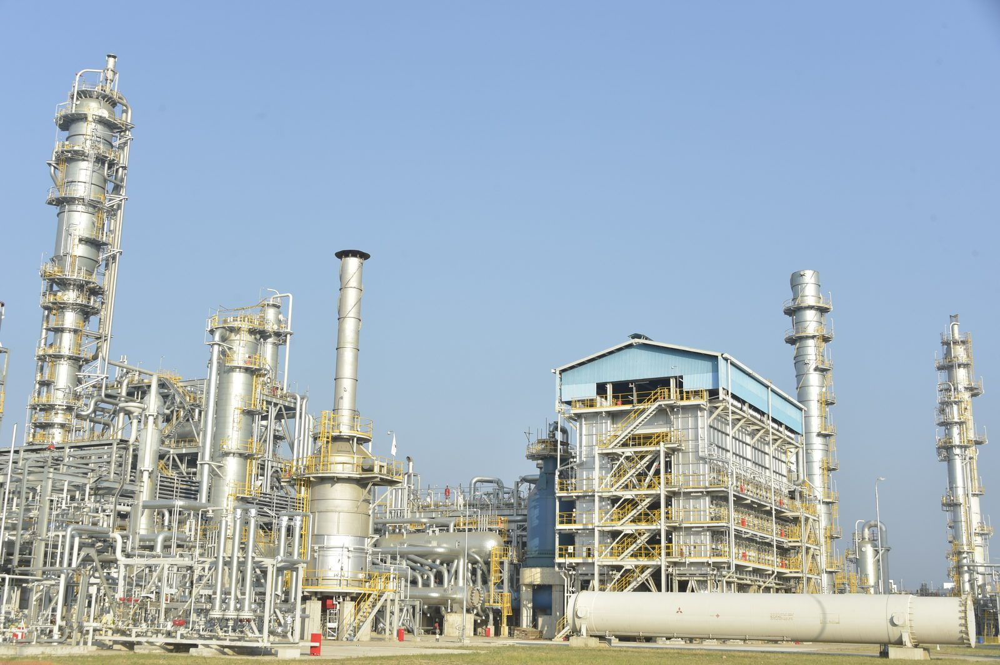
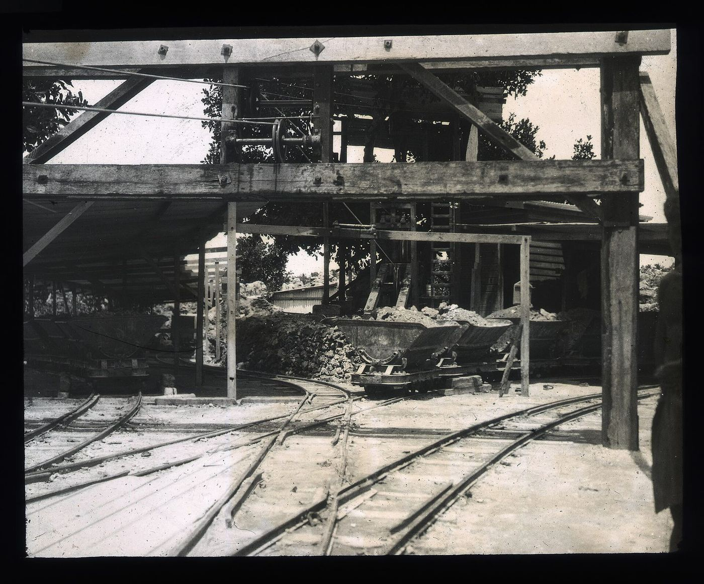

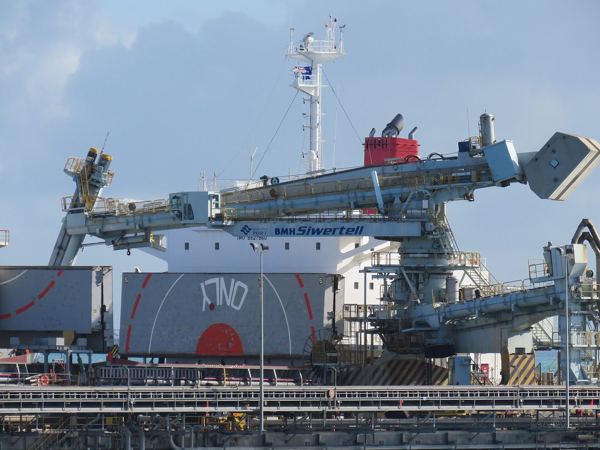
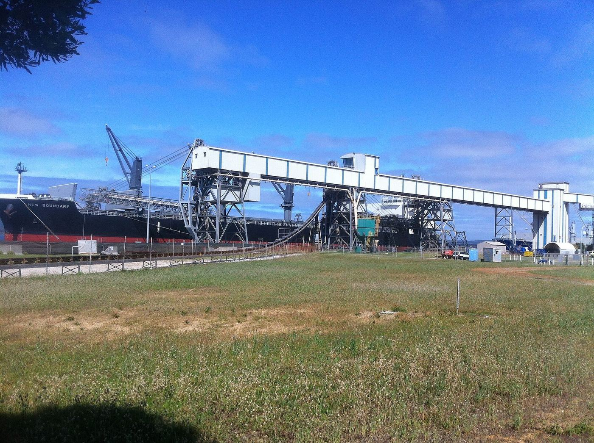
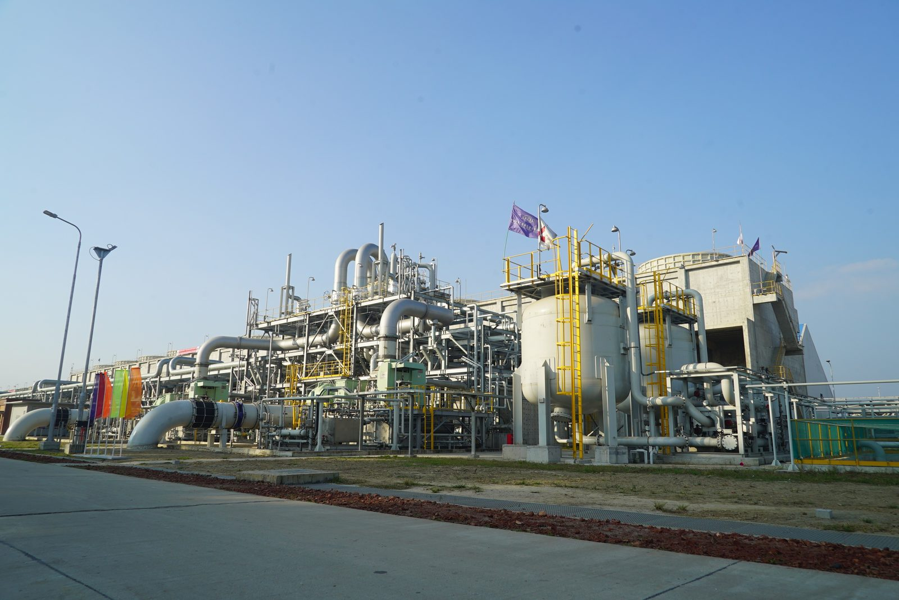
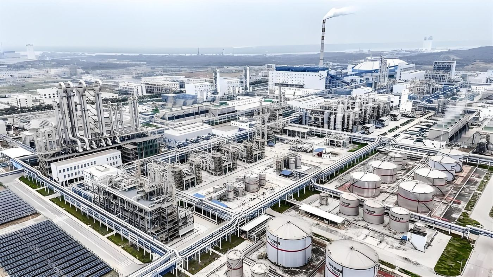

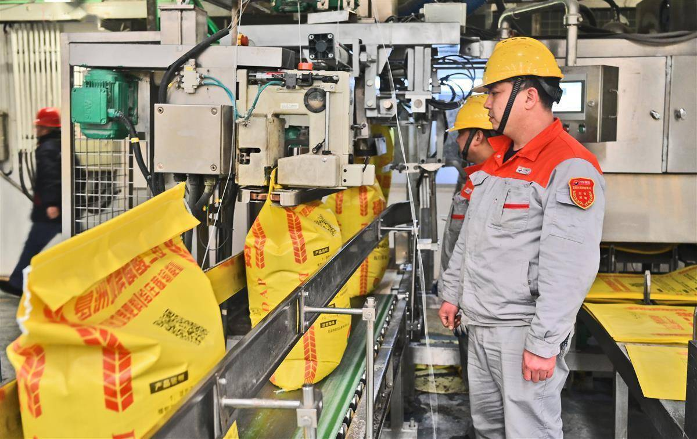


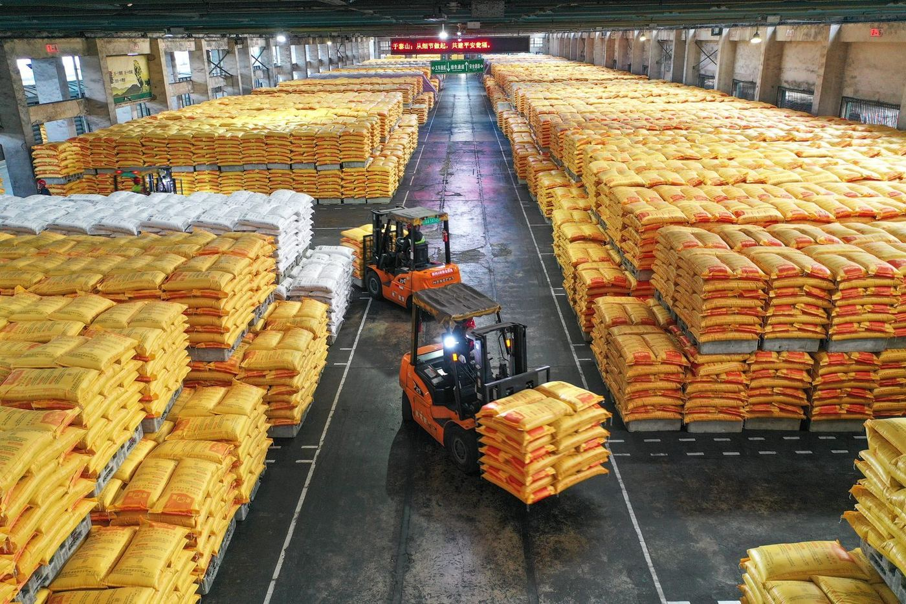
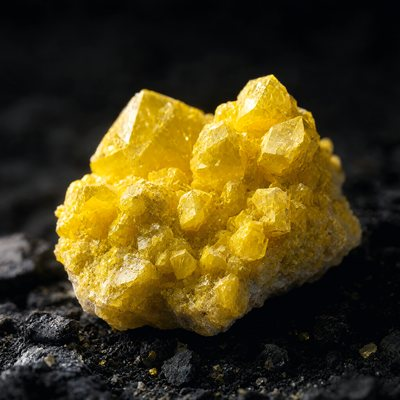
Photos shown are representative of our supply-chain footprint. Contact the desk for current programme details.